Sáng nào, ông mặt trời cũng đến chào RISA đầu tiên.
Đến chiều, ông sẽ nghỉ ngơi rất sớm, nhường chỗ cho bóng râm cùng bà mặt trăng và các chị
sao ghé chơi.
Tối đến, chỉ cần đứng trên ban công, tớ có thể thấy tòa tháp Landmark 81 rực sáng vẫy chào.


 
